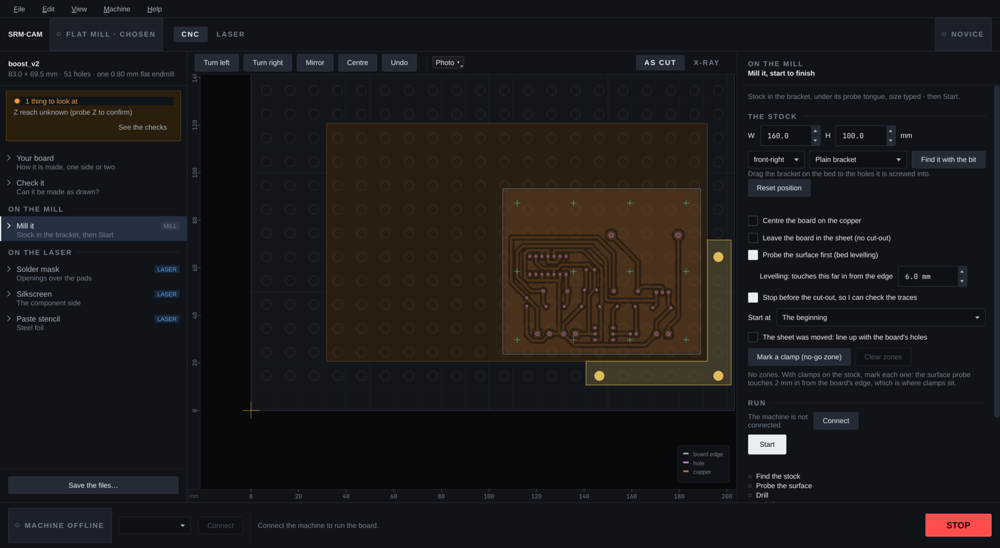
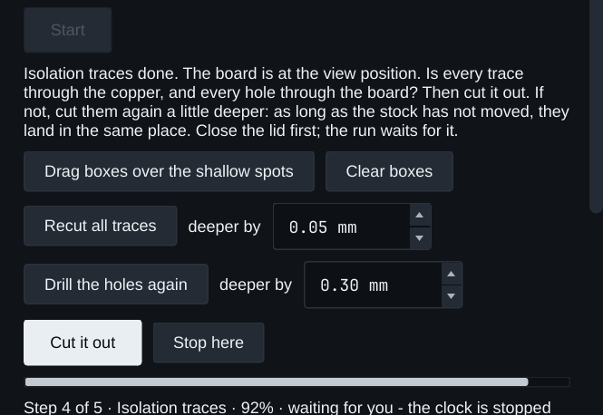
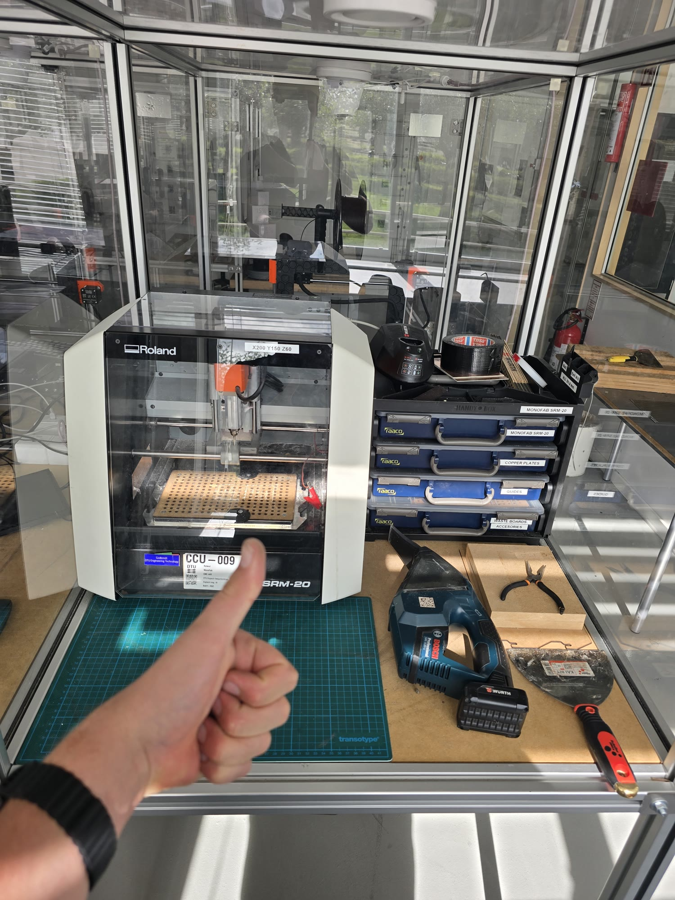
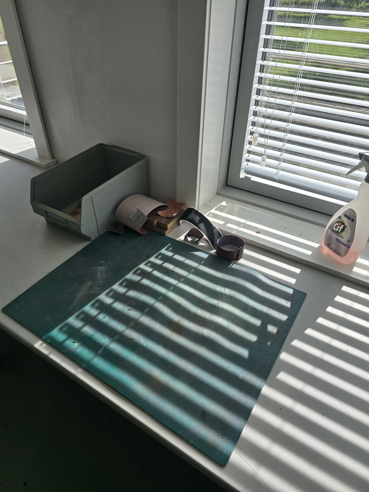
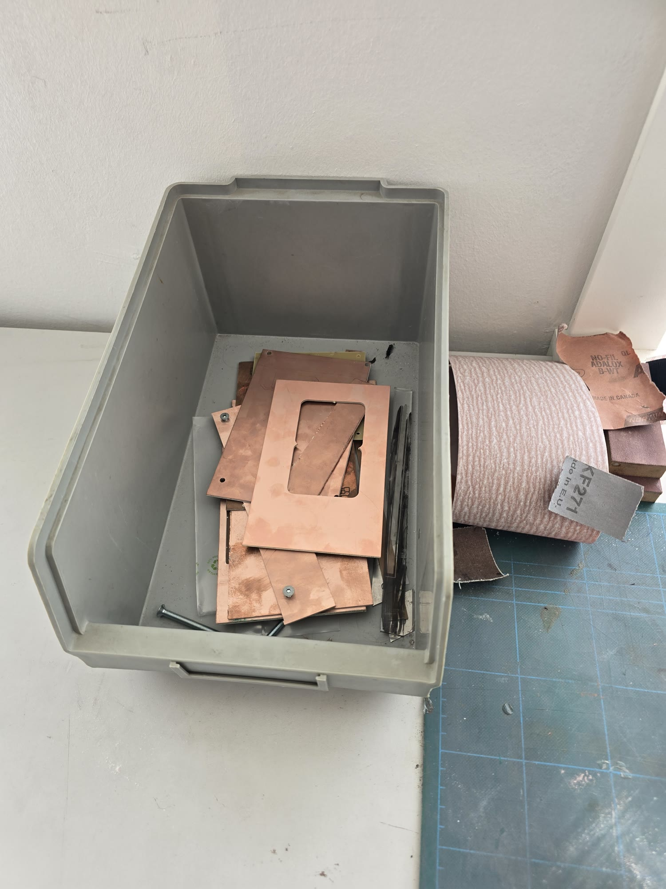

Mill a whole board
No laser needed: the SRM-20 drills, cuts the traces and cuts the board out, in one run. Load the board, push the copper into the corner, press Start. SRM-CAM does the rest and stops so you can check the board before it's cut out.
Most boards now have their copper etched on the laser: finer (gaps down to 0.20 mm, against 0.8 mm with the flat bit) and faster. See Make a board. Mill the whole board when the laser is busy or not there, or for a simple through-hole board.
From KiCad
As for any board: Set design rules for SRM-CAM, but pick Mill: 0.8 mm flat endmill (or Mill: 0.8 mm ball mill (0.44 mm channel), see How small can it go?), Apply, save, route, run DRC, then Send to SRM-CAM. The flat mill needs every gap between nets to be at least 0.8 mm, the width of the bit. All the KiCad steps, and plotting by hand: From KiCad.
How it is made
Every board has one way it is made. The chip at the top left of the window says which, and so does How it is made on Your board.
| Method | Gaps between nets | What happens |
|---|---|---|
| Flat mill (0.8 mm endmill) | 0.8 mm or more | The everyday board. The mill does it all. |
| Ball mill (0.44 mm channel) | 0.44 mm or more | Fine SMD. The mill does it all. See How small can it go? |
| Laser copper | Down to 0.20 mm | The mill drills and cuts out; the laser etches the copper. See Make a board. |
- Where it comes from: what you picked on the chip for this folder before, then what KiCad's Set design rules for SRM-CAM stored, then a guess from the narrowest gap between two nets. See The method chip.
- Change it: click the chip and pick another, at any time.
- What it decides: the checks (a laser board is checked against the laser's 0.20 mm, not against the 0.8 mm bit), the mill's tool profile, and the rows on the rail.
The steps
Install Roland's driver before anything else. SRM-CAM cannot reach the mill without it: download link and install steps. VPanel is not needed for this run.
- Plug inBoth USB cables: black (Arduino) and white (mill). Put the 0.8 mm flat bit in the collet.
- Copper in the cornerSlide the sheet under the tongue and into the bracket. Hold it down: see Holding the copper.
- Your boardOpen the board from KiCad (Send to SRM-CAM). Check the chip at the top left says Flat mill or Ball mill: see how it is made. A board with copper on both layers is set up as double-sided by itself. Then Next: Check it →.
- Check itRed means something won't come out as drawn. See spots that will be shorted. Then Next: Run it →.
- Mill itType the sheet's measured W and H. The board goes into the bracket's corner by itself; drag it if you want it somewhere else. Press Connect, close the lid, press Start. Every control on that page: The mill page.
- Check, then cut outThe board comes forward and the run waits for you. Check it, close the lid and press Cut it out.

You don't need it for this run, and if it is open you don't need to press anything in it. Keep the command set on NC Code and G54 X/Y at machine 0, 0. The run checks G54 before it cuts.
Holding the copper
The same as for a laser board: the bracket holds two edges, clamps and tape the other two, and each clamp marked with Mark a clamp (no-go zone). See Holding the copper. On a mill-only board the hold matters even more: a sheet that moves under the bit leaves shallow traces.
What the run does
- Touches the copperOnce, near the bracket corner. It drops fast, then feels for the last few millimetres.
- Levels12 touches over the board, 4 × 3. Every cut follows the copper's real height.
- Drills, then cuts the tracesDrill first: one bit does both. Each job goes straight to the mill.
- Waits for your checkThe board comes to the view position.
- Cuts the board outThen the board comes forward again.
The run lives on the rail under On the mill, with a MILL tag. It is the same run in Novice and Pro.
The check before the cut-out
Once it's cut free, a board can't be recut in place. A good channel shows dark substrate; bright copper in the groove isn't through. If you're unsure, use a multimeter.

| If | Do |
|---|---|
| It all looks good | Cut it out |
| Some traces aren't through | Drag boxes over the shallow spots, then Recut. Start with 0.05 mm deeper. Recuts add up. |
| All traces are shallow | Recut all traces, without drawing boxes. |
| Holes aren't through | Drill the holes again, 0.3 mm deeper. |
| You need to stop for now | Stop here. See picking a board up again. |
Close the lid after looking: the run waits for it before cutting again.
Shallow even with levelling?
The sheet is probably moving under the bit. The probe touches it lightly, but the cutter pushes it down. Hold it down better: see holding the copper.
Double-sided
Use copper-clad on both faces. The run drills its own reference holes to line the two faces up. By default they go In the waste, outside the board, 4 mm out, so the sheet needs room round the board; on a tight sheet pick Inside the board's corners or The board's own mounting holes under Reference holes on the run page. A laser board with copper on both faces is not done this way: see Two copper faces.
- First sideSame steps as above. Then the board comes forward and the run asks you to flip it.
- Flip it left to rightNot front to back: the app can't detect a wrong direction. Push it hard into the corner, hold it down, close the lid and press It is flipped - continue.
- Second sideIt finds the reference holes, levels, cuts the top traces and stops for your check.
- Measure the sheet: the flip mirrors the board across the width you typed.
- If a hole isn't found: it's skipped. Fewer than 3 found stops the run before the top is cut.
- Holes aren't plated: joining the two sides is up to you, with wire for example.
- Try it first:
examples/double_sided_40x20has an F and a B that only read right after a correct flip.
Double-sided has made one good board on the mill so far, with fixes along the way. Keep a hand near STOP.
Mask, silkscreen and stencil
A milled board can still have them: the LASER rows for Solder mask, Silkscreen and Paste stencil appear for any board whose folder has those layers. The mask and the silkscreen line up on the drilled holes; the stencil is cut from steel foil, apart from the board. A milled board also comes off the mill on its tabs, in its sheet: keep it there for the mask and silkscreen, and break the tabs last. See Solder mask, Silkscreen and the order on Make a board.
Stopping
- STOP or Esc stops the run at any point. If the bit is still low, raise it with Page Up.
- Opening the lid during a job also stops it.
Picking a board up again
Don't move the sheet. If the app was closed, load your saved setup first: before a run keeps the board's position. Then choose a step in Start at:
| Start at | For |
|---|---|
| Isolation traces | Drilling done, traces still to cut. |
| Find the fiducials (already flipped) | Double-sided, second side still to cut. |
| Check the board (traces are cut) | Straight to the check, cutting nothing first. |
How small can it go?
It depends on the bit, and the method picks the tool profile for it.
| Method | Profile | When | Why |
|---|---|---|---|
| Flat mill | SRM-20 0.8 mm flat | Every gap is 0.8 mm or more: through-hole parts and larger SMD. | The everyday profile, and the faster one. |
| Ball mill | SRM-20 0.8 mm ball mill | Gaps under 0.8 mm: IC pins and small SMD. | The rounded tip cuts narrower when it only goes in 0.08 mm. |
| Laser copper | The mill only drills and cuts out | Gaps under 0.44 mm. | The laser etches gaps down to 0.20 mm. See Make a board. |
The ball-mill profile cuts the traces as a 0.44 mm tool and drills and cuts out as a 0.8 mm one. Today the run treats that as two bits and will not start with it: "This tool profile needs 2 different bits, and the run uses the one in the collet for everything. Pick a one-bit profile on Your board, or export the files and run them in VPanel." (checked on the simulator, 20 November 2026). Until that changes, make a ball-mill board in Pro, one step at a time (each step asks Is the right bit in?), or by hand: Milling a board by hand.
What the ball mill can cut
Its channel is about 0.44 mm wide at the top of the copper. Tested on examples/torture_60x30, these all metered good. They're the finest on that board, so the real limit may be lower:
| Finest gap | Finest trace |
|---|---|
| 0.20 mm | 0.15 mm |
Copper isn't the limit on small parts: pads are. A gap under 0.44 mm gets one cut down the middle, which trims both pads. A pad with a cut on each side ends up no wider than the pitch minus 0.44 mm.
| Part | Pad left, across the pins | Use it? |
|---|---|---|
| SOIC 1.27, SOT-23, 0603 | Full size | Yes |
| 0402 | Full size, or trimmed by about 0.02 mm | Yes |
| TSSOP 0.65 | About 0.21 mm | Marginal |
| 0.5 mm pitch | About 0.06 mm | No |
- Keep levelling on: a ball's cut gets wider the deeper it goes.
- Not proven yet: how long a bit lasts, and pad widths measured in numbers at this setting. The flat bit hasn't been through the same test.
Good to know
- The bracket: it's set for the lab. If it's moved, drag the drawn one to the holes it's in, then re-check its corner. The app stops at Start if the board runs under the tongue.
- Clamps: mark each one with Mark a clamp (no-go zone) on the run page: the bit and the touches keep clear of it. Raise the bit before jogging near one. See Holding the copper.
- After changing to a longer bit: jog down close to the copper before a run or Probe Z, because the last height no longer holds.
- Each run's files:
Documents\SRM-CAM\runskeeps its jobs, log and height map. What the run made opens them. - Milling on another PC: Save the files… at the foot of the rail writes the job's files to a folder you choose.
In Pro
Click the tier chip at the top right of the window to switch between Novice and Pro (or ). Pro runs the same run, from the same row, and adds:
- The stock anywhere: on the run page, set the stock to Anywhere - the probe finds its corner. Drag the board on the bed to where the copper is and press Start. The probe starts in the middle of the board and walks out to the copper's edges, to find its corner and how it is turned. A board that lies on the copper it finds is cut where you put it. Keep clamps off the edges it crosses.
- Double-sided settings: if the run needs a setting changed (registration, which way it flips, the reference-hole size), Start says which and asks first.
- Every step on the rail, under One step at a time, and Start at to finish a board that stopped.
- Files for VPanel: Export for VPanel… at the foot of the rail. See Milling a board by hand.
Leave it as you found it
Vacuum the chips, close the cover, clear the bench, and put your offcuts in the scrap box. The people who use this mill are the only ones who maintain it; DesignBuildLab doesn't. A clean, tidy area is how we keep being able to use it.



Stuck? Troubleshooting.